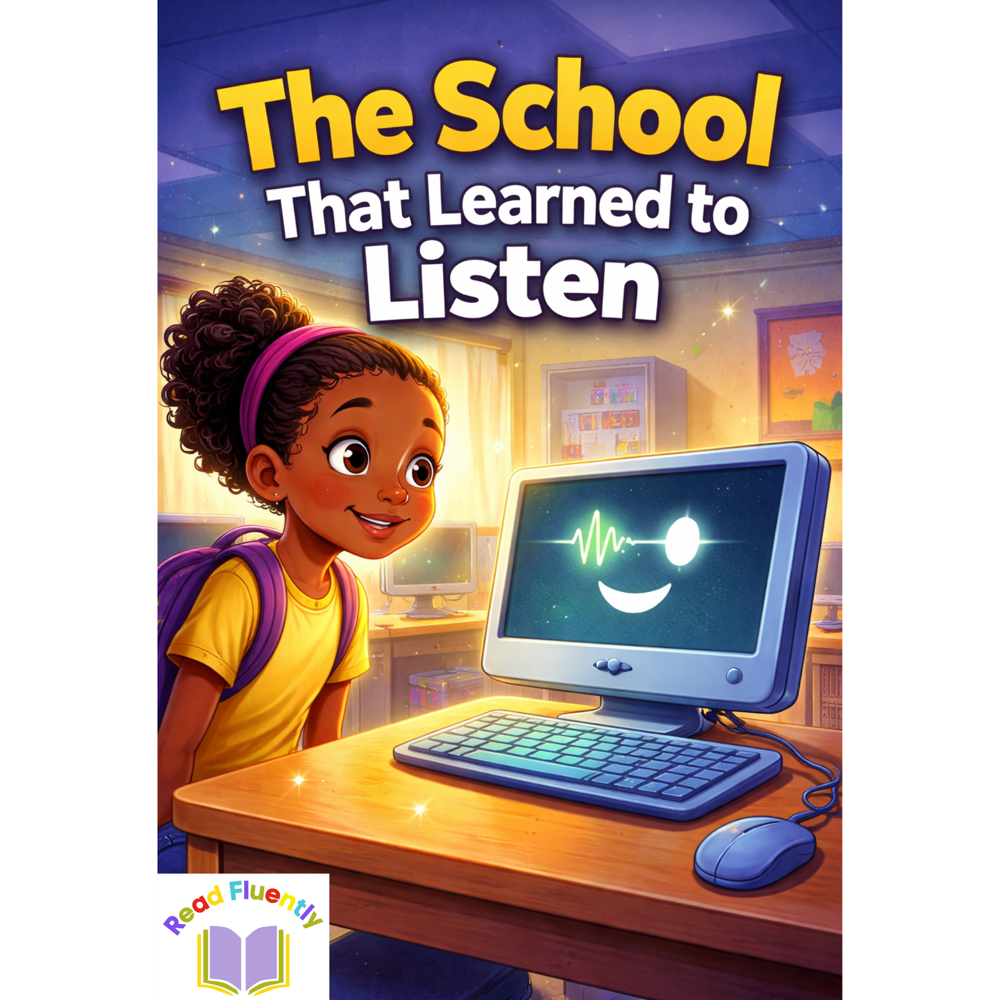

The School That Learned to Listen
Open the story page to listen, answer the comprehension activity, and record your own response.
Record and Play
Ready to record.
Listen to a story, enjoy the audio, and then practise speaking by recording and playing back your own voice.

Open the story page to listen, answer the comprehension activity, and record your own response.